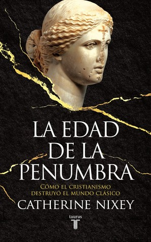

La edad de la penumbra: Cómo el cristianismo destruyó el mundo clásico
Reseña por Jorge I. Zuluaga

Ver reseña en GoodReads (necesita cuenta)
Al hacerlo, estuvieron a punto de destruir completamente la memoria y herencia intelectual y religiosa del extraordinario mundo clásico, pacientemente construida por varios milenios en el medio oriente, el norte de Africa y la península itálica, tanto por egipcios, asirios y griegos.
Si el pensamiento escéptico, la ciencia posrenacentista y la ilustración, fueron milagros asombrosos en el desarrollo intelectual humano, el cristianismo, tal y como lo demuestra, con una amplia sustentación histórica, este libro, ha sido probablemente uno de los puntos más bajos en la historia intelectual y espiritual de la humanidad.
No deja de sorprendernos, especialmente a los no creyentes, que un conjunto de creencias tan dañinas, como ha sido una y otra vez probado por historiadores y filósofos, haya sobrevivido tanto tiempo entre nosotros.
Sus principios originales, que despreciaban el conocimiento, la curiosidad, el escepticismo y la diversidad cultural espiritual, habrían sido suficientes para mantener a los pueblos que abrazaron estas doctrinas sumidos en el más profundo atraso y a merced de las pruebas más duras de la historia (guerras, enfermedades y desastres naturales) al punto que debieron extinguirse o ser dominadas por otros pueblos.
Muy a pesar de eso, el cristianismo, sin muchas modificaciones a decir verdad, sobrevivió y se arrastra rampante entre nosotros. Ese odioso libro, el antiguo testamento, en el que se basaron los primeros cristianos para destruir algunos de los más altos logros conseguidos por el mundo antiguo, sigue leyéndose todavía hoy y citándose como “fuente de sabiduría”.
Entre los peores crímenes que descubrí en este libro y que desconocía están:
- La casi total destruction de la literatura griega (de la que sobrevivió sólo el 10%,, probablemente porque estaba escrita en una lengua que no entendía el pueblo) y la literatura Romana (de la que sobrevivió sólo el 1%). ¿Cuantos “Don Quijotes”, cuántos “Cien años de soledad”, cuántos “Crimen y Castigo” perecieron en esas masacres sin sangre?
- El asesinato de Hipatia de Alejandría, posiblemente el más vil asesinato cometido en nombre del cristianismo en contra de una pensadora, maestra y filósofa en la antigüedad; un asesinato realizado con una saña que solo es consistente con el odio profundo hacia la mujer que excreta el cristianismo primitivo.
- La destruction total de la tradición filosófica griega. 1000 años de pensamiento, que siguen todavía hoy iluminando el desarrollo intelectual de la humanidad, incluso en pleno siglo de la ciencia, terminaron un día del año 532 e.c cuando salió Damascio de Siria con sus últimos colegas y discípulos expulsados de Atenas por las estúpidas leyes del sacro imperio Romano que prohibían, so pena de muerte, practicar la filosofía (¡ah bestias!) Aquel día en el que el gran Damasco, el último filósofo de Atenas que habría huido primero de la gran Alejandría y perseguido por la misma razón, cerró para siempre las puertas de la Akademia y con ellas de uno de los “faros intelectuales” más brillantes de la historia de la humanidad.
Y todo gracia una religión supuestamente monoteísta; porque otra cosa que demuestra este fantástico libro, es que el cristianismo de aquellos años estaba plagado realmente de muchos “dioses”, los demonios que perseguían a esos primeros monjes que empezaron refugiándose en el desierto y terminaron apoderándose después del poder en el imperio romano.
El libro cierra magistralmente citando las palabras de un árabe (quienes terminaron convirtiéndose en los albaceas de los tesoros intelectuales clásicos), Al Mas’udi (el “Herodoto árabe”) quién escribiría muchos años después de que el cristianismo arrasara con el mundo clásico y acabara con el imperio Romano:
“Durante los primeros días del imperio de Rum, las ciencias se honraban y gozaban de respeto universal. A partir de unos fundamentos ya sólidos y grandiosos, se alcanzaron cimas más altas cada día, hasta que la religión cristiana hizo su aparición entre los rum; esto supuso un golpe fatal al edificio del aprendizaje; sus rastros desaparecieron y sus caminos se borraron”
¡Gracias a los Árabes!